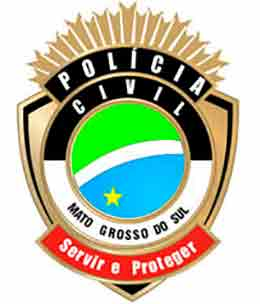

Foi aberta a inscrição para o concurso da Polícia Civil do Mato Grosso do Sul 2017, para os cargos de delegado de polícia, escrivão de polícia e investigador policial. A data para se inscrever no concurso Policia Civil MS é até o dia 10 de julho de 2017.
O valor da taxa do concurso é de R$ 197,28 para todos os cargos envolvidos. O salário do investigador policial e do escrivão de polícia no Mato Grosso do Sul, conforme previsto no edital, é de R$ R$ 3.888,26. Já o salário do delegado de polícia no MS é de R$ 14.978,26.
[caption id="attachment_2082" align="aligncenter" width="260"] Policia Civil MS[/caption]
Exigências do Concurso Policia Civil MS
Para ser investigador policial ou escrivão de polícia da Polícia Civil do Mato Grosso do Sul, é requisitado nível superior de formação escolar, em qualquer área. Já para ser delegado de polícia, é exigido que o candidato seja graduado em faculdade de Direito.Neste concurso de 2017 serão 100 vagas para escrivão de polícia judiciária, e mais 80 vagas para investigador de polícia judiciária. Dentro dessas vagas, há reserva de cotas para os que se declarem negros, índios, e para pessoas com deficiência.
O concurso para agentes, além da prova de concurso objetiva, terá ainda fases de exames médicos, exames físicos, psicológicos, e digitação. Também haverá investigação social e curso de formação na academia de polícia.
[caption id="attachment_2082" align="aligncenter" width="150"] Policia Civil MS[/caption]
Edital do Concurso Policia Civil MS 2017
O edital para o concurso de escrivão de polícia e investigador de polícia da PCMS pode ser acessado neste link, assim como as instruções para se inscrever: LINKJá para entrar como delegado de polícia da PC MS, foram abertas 30 vagas no total, dentre elas algumas com reservas de cotas. Para ver o edital do concurso para delegado de polícia do MS, e o procedimento para inscrição, acesse este LINK
Para se preparar para o Concurso Policia Civil MS, não se esqueça de estudar pelas provas anteriores do concurso, e boa sorte!